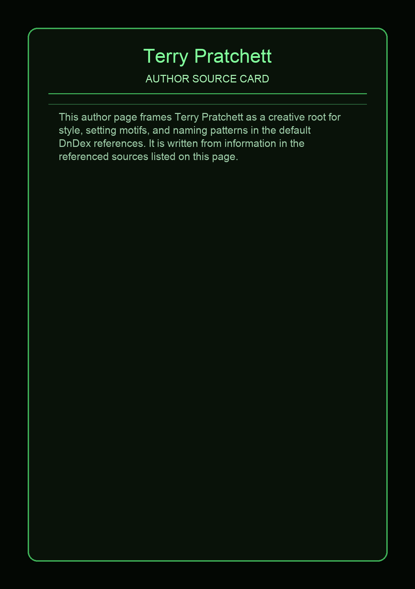

No local reference photo has been downloaded for this source yet.
Terry Pratchett appears in 4 DnDex cards, including Ankh-Morpork, DEATH, Granny Weatherwax, Rincewind. The greatest city on the Discworld â which is to say, the most interesting in the way that a compost heap is interesting. A seven-foot skeleton in a black robe who speaks IN CAPITAL LETTERS. Esmerelda Weatherwax, the most powerful witch on the Discworld.
Links open in a new tab and are provided for reference.